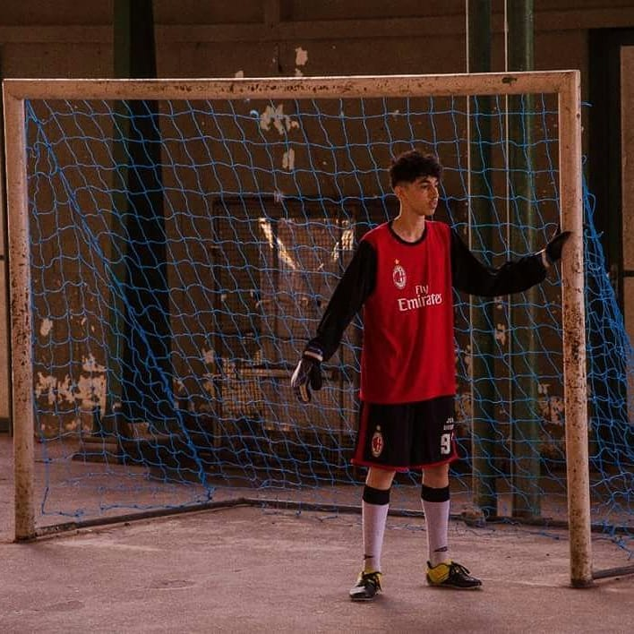

About eu
Apenas por questão de curiosidade, aqui está uma magnifica foto de quando eu morava em aracajivis, passei apenas 1 ano la e voltei, minha bahia >>>>>>>>>> aracajivis

Eu não sou goleiro, mas ja participei de um campeonato na minha igreja como goleiro, 2x, mas eu judio mais o futebol na linha.
e pra eu não apanhar mais tarde, ta ai uma foto com a mais linda mulher do mundo
Curiosidades
- Tenho bastante facilidade de aprender. (Quando quero)
- Eu jogo muita bola por teimosia
- Minha cara já diz quase tudo, SOU LINDO. e bem pouquinho preguiçoso
- Nos meus tempos livres jogo no pc ou no xbox
- Não se engane! posso parecer um ator de novela, mas não, não sou !